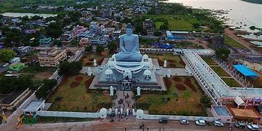
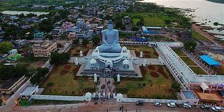

Guntur is a city in the Indian state of Andhra Pradesh and the administrative headquarters of Guntur district. The city is part of the Andhra Pradesh Capital Region and is located on the Eastern Coastal Plains approximately 30 kilometres (19 mi) south of the state capital Amaravati. According to data from the 2011 Census of India, Guntur had a population of 743,354 in that year, making it the third-most-populous city in the state,[2] and occupies 159.46 square kilometres (61.57 square miles) of land. Guntur serves as a major hub for the export of chilli, cotton and tobacco, and has the largest chilli-market yard in Asia.[3] It is also a major hub for transport, education, medicine and commercial activities in the state.[4] Ancient temples and sites near the city include Kondaveedu Fort, Amareswaraswamy temple, and Undavalli Caves, and Sri Bramarambha Malleswara Swamy Temple at Pedakakani.

The region was historically known for Buddhism; the first Kalachakra ceremony was performed by Gautama Buddha.[8] Agastyeshwara temple is one of the oldest temples in the city; according to a local legend, Agastya built it in the Treta Yuga around a swayambhu linga. Inscriptions on the side of Naga Muchalinda, a sculpture unearthed in 2018 in the compound of the temple, are in Naga Lipi, an ancient script from the third century CE. Based on this discovery, Emani Sivanagi Reddy, archaeologist and Buddhist scholar believes this region served as a Buddhist site contemporary to Nagarjunakonda.[9] The earliest reference to Guntur is found in inscriptions by Ammaraja I (922–929 CE), the Vengi Chalukyan king.[5] According to an inscription in Sri Narasimha Swami temple at Ramachandra Agraharam, Tirumala Dasa Mahapatra—the local ruler of the Gajapathi king Kapileswara Gajapathi—gave donations to the temple of Mulastha Mallikarjuna Deva in 1485 CE.[10]
 

.jpg)
Guntur is located at 16.29°N 80.43°E.[19] It has an average elevation of 33 metres (108 ft) and is situated on the plains. There are few hills in the surrounding suburban areas and Perecherla Reserve Forest is located in the city's north-west. Guntur lies approximately 30 kilometres (19 mi) south of Amaravati, the capital of Andhra Pradesh.
Tourist attractions in Guntur include Sri Ganga Parvathi Sametha Agastheswara temple. In the old city are Gandhi Park, Baudhasree architectural museum, Nagaravanam and NTR Manasa Sarovaram. Ancient temples and sites near the city include Amareswaraswamy temple, Undavalli Caves, Sri Bramarambha Malleswara Swamy Temple at Pedakakani and Kondaveedu Fort.[72][73] Uppalapadu Bird Sanctuary is 10 km (6.2 mi) from the city and Suryalanka Beach is 60 km (37 mi) away.
According to the Köppen-Geiger climate classification system, the climate in Guntur is tropical with dry winters (Aw). The average temperature is warm-to-hot year round. The summer season, especially May and June, has the highest temperatures, which are usually followed by monsoon rains. During the winter season, running from November to February, the weather is usually dry with little-to-no rainfall. The wettest month is July. The average annual temperature is 28.5 °C (83.3 °F) and annual rainfall is about 905 millimetres (36 in). Rain storms and cyclones are common in the region during the rainy season, which starts with the monsoons in early June. Cyclones may occur any time of the year but occur most commonly between May and November.
The city's local authority is Guntur Municipal Corporation (GMC), which at over 150 years old, is one of India's oldest municipalities.[27] It was constituted in 1886, when the city had a population of 25,000; the city was upgraded to a third-grade municipality in 1891, a first-grade municipality in 1917, a special-grade municipality in 1952, and a selection-grade municipality in 1960. In 1994, Guntur was upgraded as a municipal corporation and its first local election was held in 1995.[28] The city is divided into 57 revenue wards.[21] During the financial year 2018–19, the corporation had a budget of ₹1,004 crore (equivalent to ₹13 billion or US$160 million in 2023).[29] Guntur is one of thirty-one cities in the state to be a part of water-supply-and-sewerage-services mission known as Atal Mission for Rejuvenation and Urban Transformation (AMRUT).[30] The city was certified as open defecation free as part of Swachh Bharat Mission.[31] In the 2023 Swachh Survekshan rankings, Guntur was ranked fourth in India,[32] rising from its ranking of 129th in 2018.[33] District Court Complex Guntur is the headquarters of Guntur East and Guntur West mandals in Guntur revenue division.[34] The city is a major part of Andhra Pradesh Capital Region Development Authority.[35] It is represented in the federal government by Guntur Lok Sabha constituency,[36] and at state level by Guntur East and Guntur West assembly constituencies.
In 2019, pollution levels in Guntur city were at a moderate level when compared with other major cities.[74] There have been many efforts to increase awareness and keep the city clean,[75] including a 100-day cleanup drive in 2021.[76] A plastic-waste-to-fuel conversion plant was set up in the city; fuel from the plant was used for vehicles run by the GMC.[77][78] The GMC started using electric vehicles for domestic garbage collection in 2021.[79] E-auto rickshaws were introduced in the city to reduce air and noise pollution; many electric charging stations have been set up across the city for this purpose.[80] Efforts to reduce plastic use in the city and replace it with environment-friendly materials like jute, paper and cloth have been made.[81] o trains and electric bus systems, and improvements to city expansion plans.[82]
Local transport in Guntur includes privately operated auto rickshaws, taxi cabs, minibuses and government-run APSRTC buses.[83][84][85] Auto rickshaws operating on a sharing basis are the cheapest form of transport for students and workers. NTR bus station and an adjacent minibus station accommodate more than 2,000 buses every day, about half of them from depots in the erstwhile united district.[86][87] Plans for e-Bus Bay centres in the city were proposed in 2021.[88] Roads The city has a total of 893.00 km (554.88 mi) of roads.[89] Mahatma Gandhi Inner Ring Road is a 6.34-kilometre (3.94 mi) arterial road that starts on National Highway 16.[90][91] The inner ring road, along with Guntur Bypass, and sections of national and state highways, encircles the city. The arterial city roads include Grand Trunk Road, JKC College Road, Lakshmipuram Road, Pattabhipuram Road and Palakaluru Road. The GMC identified Amaravati Road, Lalapuram Road, Medical Club Road, Chuttugunta Road and Palakaluru Road for double-laning, and many other roads for widening to accommodate traffic.[92] National highways (NH), state highways (SH) and major district roads pass through Guntur.[93] NH16, part of Asian Highway 45 and Golden Quadrilateral with Guntur Bypass connects to Chennai and Kolkata on the east coast of India. NH167A and SH2 connect Guntur with Macherla and Hyderabad.[94] NH544D connects Guntur with Anantapur and towards Bengaluru on NH44. SH48 connects Guntur with the coast through Bapatla and Chirala.[95] Major district roads link Guntur with Amaravati,[96] Nandivelugu, Tenali,[97] Mangalagiri, and Parchur.[98] Rail Guntur's main railway stations are Guntur Junction, Nallapadu and New Guntur.[99] Stations at Namburu, Perecherla and Pedakakani Halt serve as satellite stations.[100] MEMU and local train services between Guntur and Vijayawada are used by thousands of university students and public.[100] The Rail Vikas Bhavan[clarification needed] at Pattabhipuram is the headquarters of Guntur railway division.[101] Guntur railway station is well connected with Vijayawada and Tenali railway stations. Air Vijayawada international airport, the nearest airport to Guntur, is 54 km (34 mi) away.[102
| AREA | 11391sqkm |
|---|---|
| IAS | Ms.Naga lakshmi |
| IPS | tushar das |
| DGP | A.Ravi sahnkar |
| mandals | 18 |
| population | 20,91,075 |
| GVMC commisioner | saikanth varma |